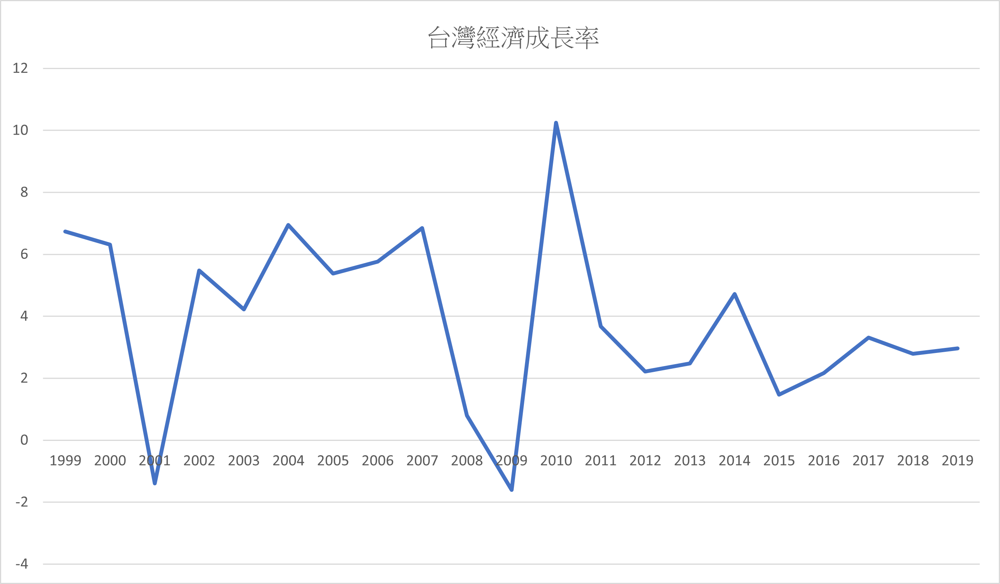
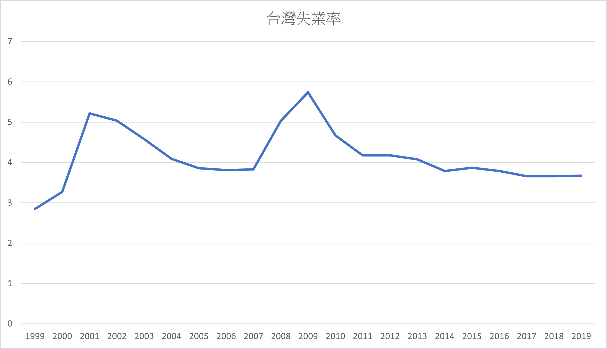
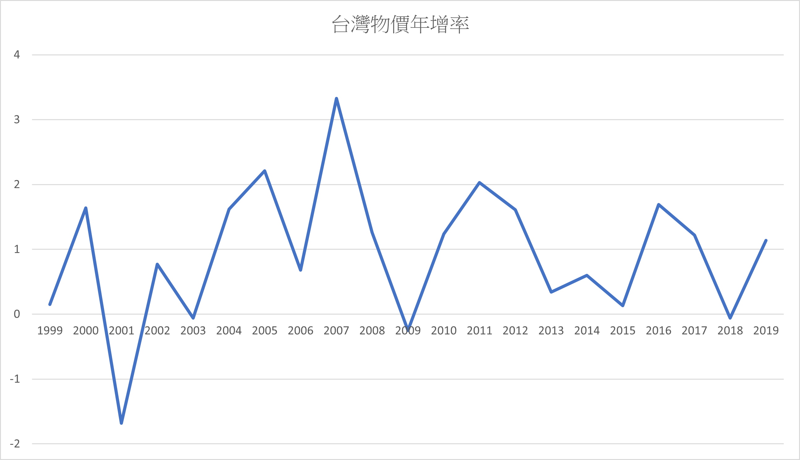

台灣經濟成長率

從圖表出我們可以看到臺灣的經濟是年年在進步的，唯一一次負成長是在2008年全球金融風暴時以及2001年時全球資訊科技產業衰落加上911事件重創全球經濟。
台灣失業率

從圖表中我們可以看到，臺灣的失業率其實是維持一個平均程度下的前進，唯二幅度比較大，失業率較高的則是在2008年和2001年時，分別為全球金融海嘯和全球資訊科技產業衰落加上911事件重創全球經濟發生的。
台灣物價年增率

從圖表中可以觀察到台灣的物價是年年升高的狀況，其中包含了總總原因，原物料的上漲，石油價格的上漲，都導致了台灣物價的飆升，就算原物料價格降低，已上升的物價卻也沒辦法恢復成原來的價位。